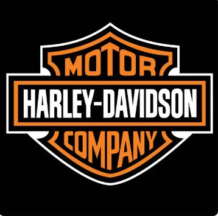
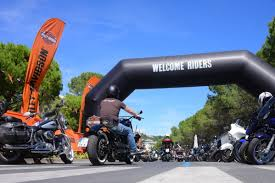
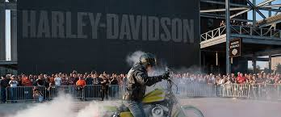
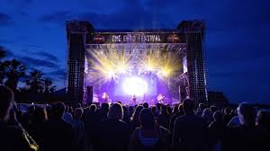

Harley-Davidson
¿Por qué me gustan las motos?
Las motos pueden ser una pasión para muchas personas. Para mi es un estilo de vida, que adoptas para ver al mundo con libertad y las razones son las siguientes.
- La libertad y la adrenalina que se siente al conducir una moto
- La sensación de conexión con la carretera y el entorno
- La variedad de estilos y diseños que existen en el mundo de las motos
- La comunidad de motociclistas y la posibilidad de conocer a nuevas personas
¿Por qué escogí hacer una página sobre Harley-Davidson?
Harley-Davidson es una de las marcas de motos más icónicas y reconocidas del mundo. Y pro ser mi marca favorita de motos por su estilo y calida.
- La rica historia y el legado de la marca, que se remonta a más de 100 años
- El estilo y el diseño característicos de las motos Harley-Davidson, que son conocidos por su estética clásica y robusta
- La comunidad de motociclistas que se identifican con la marca y su estilo de vida
- La variedad de modelos y opciones que ofrece Harley-Davidson, desde motos touring hasta motos custom
¿A qué se dedica Harley-Davidson?
Harley-Davidson es una empresa que se dedica a la fabricación y venta de motocicletas, así como a la creación de accesorios y ropa para motociclistas. La marca es conocida por sus motos de gran cilindrada y su estilo clásico.
Historia de Harley-Davidson
Harley-Davidson fue fundada en 1903 por William S. Harley y Arthur Davidson en Milwaukee, Wisconsin, Estados Unidos. La empresa comenzó fabricando motocicletas pequeñas y ligeras, pero pronto se convirtió en una de las marcas más reconocidas y respetadas del mundo.
Tiendas en México
Harley-Davidson tiene tiendas y concesionarios en México. Siendo la mas grande y popular La COYOTE ubicada en Monterrey
Modelos de motos Harley-Davidson
Harley-Davidson ofrece una variedad de modelos de motos, como los siguientes y mas populares.:
- Touring: motos diseñadas para viajes largos y cómodos, como la Electra Glide y la Road King
- Softail: motos con un estilo clásico y una suspensión trasera oculta, como la Fat Boy y la Heritage Classic
- Sportster: motos más pequeñas y ágiles, ideales para conductores principiantes o para aquellos que buscan una moto más manejable
- Custom: motos personalizadas y únicas, como la Breakout y la Fat Boy S
Eventos de HARLEY-DAVIDSON 2025
- Harley-Davidson Euro Festival: 8-11 de mayo de 2025, Port Grimaud, Golfo de Saint-Tropez, Francia. Un evento que reúne a miles de motoristas para disfrutar de música y camaradería.
- Blue Sky Heaven: 10-11 de mayo de 2025, Yokohama, Japón. Un festival de estilo de vida urbano que combina música y motociclismo.
- European H.O.G. Rally: 12-15 de junio de 2025, Medulin, Croacia. Un evento anual que reúne a motoristas para disfrutar de actividades únicas y pruebas de motos nuevas.
- Harley-Davidson World Ride: 24-25 de junio de 2025, México. Una invitación para los consumidores a rodar y acumular kilómetros demostrando el espíritu de la comunidad Harley-Davidson.
- Harley-Davidson Homecoming: 10-13 de julio de 2025, Milwaukee, Wisconsin. Un festival de cuatro días repleto de música y actividades para entusiastas de Harley-Davidson.
- Sturgis Motorcycle Rally: 1-8 de agosto de 2025, Sturgis, Dakota del Sur. La madre de las concentraciones motociclistas regresa con su 85a edición.
- European Bike Week: 2-7 de septiembre de 2025, Lago Faak, Austria. Un evento que reúne a motoristas para disfrutar de actividades únicas, pruebas de motos nuevas y preparaciones increíbles.

Otros eventos
- Daytona Bike Week: 1-8 de marzo de 2025, Daytona Beach, Florida. Una de las semanas de moto más famosas del mundo, con actuaciones en vivo, exhibiciones de motos y carreras.
- Harley Night: 14 de marzo de 2025, Europa, Medio Oriente y África. Un evento que busca unir a motociclistas y entusiastas en una celebración compartida de libertad e innovación.

Compromiso con la calidad y la comunidad
Harley-Davidson se compromete con la calidad de sus productos y la satisfacción de sus clientes. La empresa también apoya a la comunidad motociclista a través de eventos y programas que promueven la camaradería y la pasión por las motos.
- Harley-Davidson Foundation: una fundación que apoya a organizaciones benéficas y proyectos comunitarios.
- Programas de entrenamiento: Harley-Davidson ofrece programas de entrenamiento para motociclistas principiantes y avanzados.
- Comunidad Harley-Davidson: la empresa fomenta la comunidad y la camaradería entre los motociclistas a través de eventos y actividades.
